수업 중인 프로그램 화면 — 왼쪽 큰 칸에 선생님(파란 줄)·학생(주황 줄) 자막이 차례로 쌓입니다.
어떻게 동작하나요? 마이크 소리에서 말하는 부분만 골라 Google Gemini 로 보내면, Gemini 가 받아쓰고 번역해 돌려줍니다.
프로그램은 말이 끝나는 쉼마다 짧게 끊어 보내고(기본 방식), Live 모드를 켜면 말하는 동안 소리를 흘려 보내 말하는 중에도 번역을 받습니다(8장).
2내려받기와 설치
GitHub 계정 없이 누구나 받을 수 있습니다. 둘 중 하나만 받으면 됩니다. 처음이면 설치판을 권합니다.
2-1. 내려받기
인터넷 주소창에 github.com/7guwol7-max/translatorinclass 를 입력하거나, 아래 QR 코드를 휴대폰으로 찍어 엽니다.
첫 화면 가운데의 내려받기 (Windows) 표에서 ClassroomInterpreter-Setup.exe 를 누릅니다.
ClassroomInterpreter-Portable-win-x64.zip 을 마우스 오른쪽 단추로 누르고 압축 풀기(또는 모두 압축 풀기)를 고릅니다.
풀린 폴더의 ClassroomInterpreter.exe 를 두 번 누릅니다. (PC 보호 창이 뜨면 위와 같이 추가 정보 → 실행)
압축을 풀지 않고 zip 안에서 바로 실행하면 제대로 동작하지 않습니다. 꼭 압축을 푼 뒤 실행하세요.
2-4. 새 버전으로 바꾸기 · 지우기
새 버전: 같은 주소에서 새 설치판을 받아 그대로 설치하면 덮어씁니다. 키·설정은 그대로 남습니다.
지우기: Windows 설정 → 앱 → 설치된 앱에서 ClassroomInterpreter → 제거.
3Gemini 무료 키 만들기
프로그램이 Google Gemini 를 쓰려면 선생님 본인의 무료 'API 키'가 하나 필요합니다. 처음 한 번만 만들면 됩니다.
인터넷에서 aistudio.google.com/apikey 를 엽니다. (처음 설정 2단계의 Google AI Studio 를 눌러도 열립니다)
Google 계정으로 로그인합니다. 처음이면 이용 약관에 동의합니다.
API 키 만들기 (영어 화면이면 Create API key) 를 누릅니다. 프로젝트를 고르라고 하면 기본값 그대로 둡니다.
만들어진 키 옆의 복사 단추를 누릅니다. 키는 AIza… 또는 AQ.… 로 시작하는 긴 글자입니다.
교실 통역의 처음 설정 → Gemini 키 칸(또는 API 키 메뉴)에 붙여넣고 저장하고 확인을 누릅니다 (4장).
카드를 등록하지 마세요. 무료 등급으로 충분하며, 카드 등록(결제 연결)을 하면 유료 등급이 됩니다.
키는 비밀번호처럼 다루세요. 다른 사람에게 보내거나 다른 선생님과 같이 쓰지 마세요 (무료 한도가 같이 줄어듭니다).
학교 Google 계정에서 AI Studio 가 막혀 있으면 학교 관리자에게 문의하거나 개인 Google 계정으로 만드세요.
무료 한도는? 하루에 보낼 수 있는 요청 수와 1분에 보낼 수 있는 요청 수가 모델마다 정해져 있습니다.
프로그램이 여러 모델을 묶어 쓰고 남은 양을 "오늘 남은 무료 사용: 약 3시간"처럼 보여 주므로 따로 계산할 필요는 없습니다(9장).
한도는 매일 오후 4~5시(한국 시간)에 다시 채워집니다.
4처음 설정 (5단계)
설치 후 처음 실행하면 처음 설정 창이 자동으로 뜹니다. 순서대로 따라 하면 3분이면 끝납니다.
1단계 · 시작
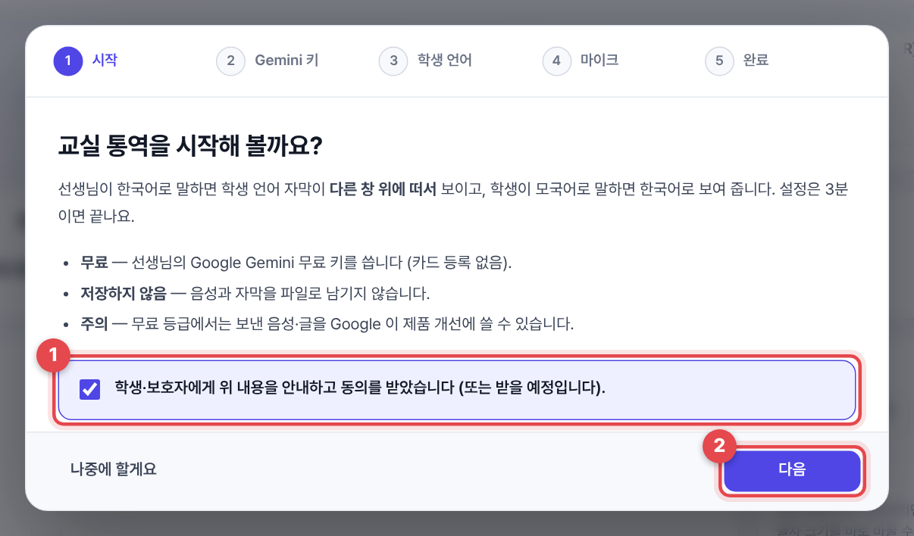
1안내를 읽고 학생·보호자에게 안내하고 동의를 받았습니다 칸에 표시합니다. (예시문은 12장)
2다음을 누릅니다.
2단계 · Gemini 키
1키가 없으면 Google AI Studio 를 눌러 키를 만듭니다 (3장).
2복사한 키를 칸에 붙여넣습니다 (CtrlV). 키는 점으로 가려져 보입니다.
3저장하고 확인을 누르면 초록 글씨로 연결됐어요 ✓ 가 나옵니다. 그다음 다음.
빨간 글씨로 "키가 올바르지 않습니다"가 나오면 키를 다시 복사해 붙여넣으세요. 앞뒤 빈칸이 들어가지 않게 AI Studio 의 복사 단추를 쓰면 가장 확실합니다.
3단계 · 학생 언어
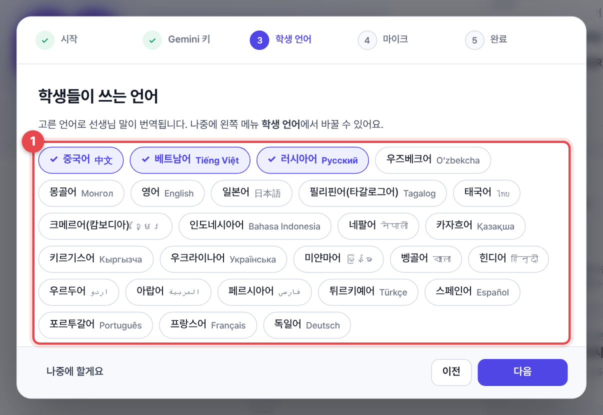
1학급 학생들이 쓰는 언어를 눌러 고릅니다 (여러 개 가능). 선생님 말은 이 언어들로 번역되고, 학생 말은 이 중에서 알아듣습니다. 꼭 필요한 언어만 고르면 가장 빠릅니다.
4단계 · 마이크
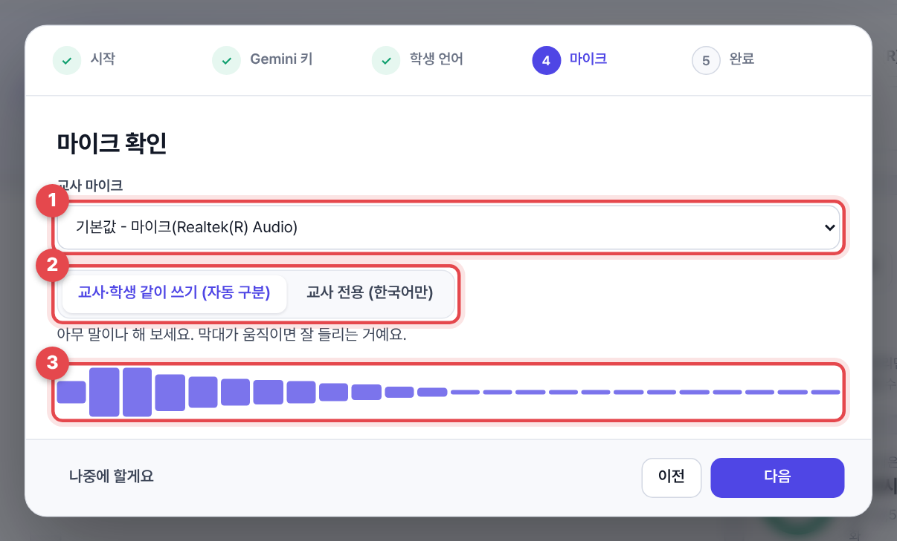
1쓸 마이크를 고릅니다. 잘 모르면 기본값을 그대로 둡니다.
2마이크가 하나면 교사·학생 같이 쓰기(한국어면 선생님, 다른 언어면 학생으로 구분). 선생님만 쓰는 무선 마이크면 교사 전용.
3아무 말이나 해 보세요. 막대가 움직이면 잘 들리는 것입니다. 전혀 안 움직이면 13장 '마이크' 항목을 보세요.
5단계 · 완료
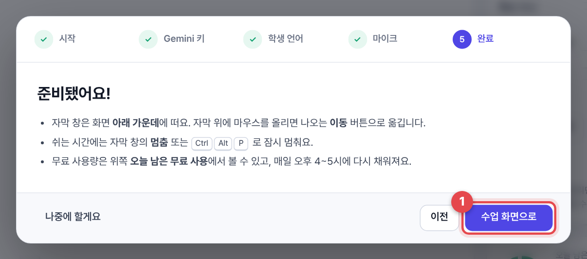
1수업 화면으로를 누르면 끝납니다.
처음 설정은 언제든 왼쪽 메뉴 아래 처음 설정 다시 하기로 다시 열 수 있습니다. 나중에 할게요로 건너뛴 경우에도 같습니다.
5수업하기
5-1. 수업 화면
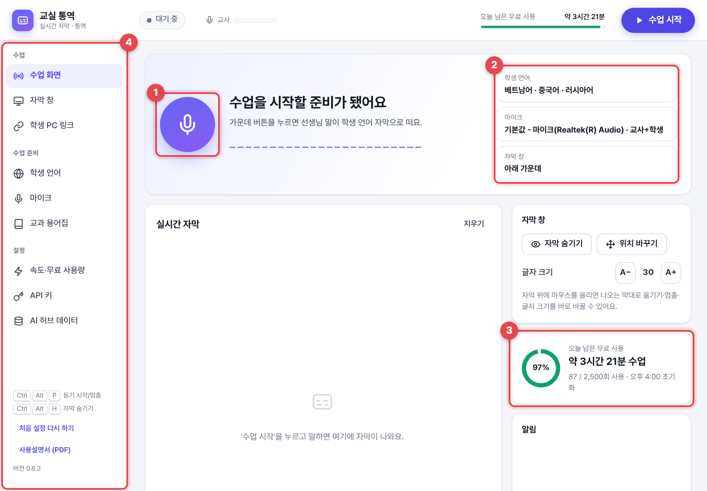
1큰 마이크 버튼을 누르면 수업(듣기)이 시작됩니다. 위쪽 오른쪽 수업 시작 버튼, 단축키 CtrlAltP 도 같습니다.
2빠른 설정: 학생 언어·마이크·자막 창 위치가 보이고, 누르면 그 설정 화면으로 갑니다.
3오늘 남은 무료 사용: 지금 속도로 오늘 몇 시간 더 쓸 수 있는지 보여 줍니다.
4왼쪽 메뉴: 수업 · 수업 준비 · 설정 화면으로 이동합니다. 맨 아래에 단축키와 사용설명서 (PDF) 링크가 있습니다.
5-2. 수업 중
1버튼이 빨갛게 바뀌고 듣고 있어요가 나옵니다. 다시 누르면 수업이 끝납니다.
2자막이 말 끝나고 약 N초 뒤 나와요: 지금 자막이 늦는 정도입니다. Live 모드면 앞에 Live · 가 붙습니다.
3실시간 자막: 선생님 말(파란 줄)은 학생 언어로, 학생 말(주황 줄)은 한국어로 나옵니다. 받는 중인 자막은 흐리게 보이다가 다 받으면 진해집니다.
쉬는 시간이나 개인적인 이야기를 할 때는 멈춤(자막 창 도구 막대) 또는 CtrlAltP 로 잠시 멈추세요. 멈춘 동안에는 소리를 보내지 않습니다.
5-3. 자막 창
수업을 시작하면 화면 아래 가운데에 반투명 자막 창이 뜹니다. 프로젝터가 연결돼 있으면 프로젝터 화면에 뜹니다. 프로그램을 켠 뒤에 프로젝터를 꽂아도 그쪽으로 옮겨 갑니다 (화면을 따로 고르지 않았을 때).
PPT 쇼·동영상을 전체 화면으로 켜도 자막이 위에 보입니다. 최근 자막 2개가 보이고, 20초 동안 말이 없으면 잠시 사라집니다.
선생님 말: 위 줄 한국어, 아래 줄들이 학생 언어 (자막 창에는 최대 3개 언어)
학생 말: 🙋 표시와 함께 한국어 번역이 크게, 학생이 한 말이 작게
자막 창은 클릭을 아래 창으로 통과시킵니다. PPT 를 넘기거나 판서할 때 방해되지 않습니다.
5-4. 자막 창 도구 막대
자막 위에 마우스를 올리면 오른쪽 위에 도구 막대가 나타납니다.
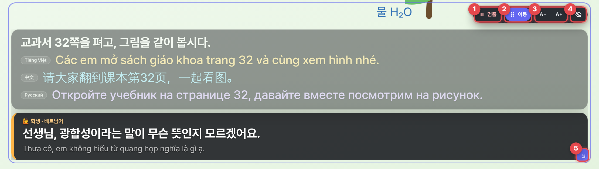
1멈춤 / 다시 시작: 듣기를 잠시 멈추거나 다시 시작합니다.
2이동: 누른 채로 끌면 자막 창이 따라 움직입니다.
3A− / A+: 글자를 작게 / 크게.
4숨기기: 자막 창을 숨깁니다. 다시 보이려면 CtrlAltH.
5오른쪽 아래 모서리를 끌면 크기가 바뀝니다.
5-5. 단축키
단축키
하는 일
CtrlAltP
수업(듣기) 시작 / 멈춤 — 프로그램이 뒤에 있어도 됩니다
CtrlAltH
자막 창 숨기기 / 보이기
CtrlAltM
자막 창 전체를 끌어서 옮기기·크기 바꾸기 → 다 되면 한 번 더 눌러 끝내기
5-6. 수업 끝내기
큰 버튼(빨간색) 또는 위쪽 수업 끝내기를 누릅니다. 화면의 자막 기록은 프로그램을 닫으면 사라집니다. 다음 수업은 다시 큰 버튼만 누르면 됩니다.
6자막 창 위치·크기
왼쪽 메뉴 자막 창에서 자막이 뜰 화면과 자리를 고릅니다. 누르는 즉시 옮겨집니다.
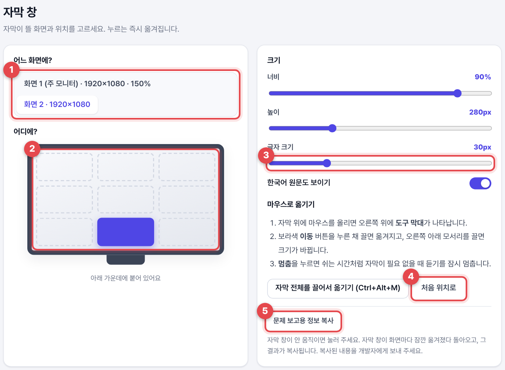
1어느 화면에?: 프로젝터·TV 가 연결돼 있으면 화면을 고릅니다. (Windows 디스플레이 설정이 확장일 때 화면이 2개로 보입니다. 복제면 하나로 보입니다) 화면 이름 끝의 150% 같은 숫자는 Windows 배율입니다. 노트북과 프로젝터의 배율이 달라도 자막 창이 정확한 자리로 갑니다.
2어디에?: 모니터 그림의 9칸 중 하나를 누르면 자막 창이 그 자리로 갑니다. 칠판 판서를 가리면 위 가운데도 좋습니다.
3크기: 너비·높이·글자 크기를 밀대로 바꿉니다. 교실 뒤에서도 보이게 글자를 키우세요 (보통 30~40).
4처음 위치로: 자막 창이 안 보이는 곳으로 갔을 때 누릅니다.
5문제 보고용 정보 복사: 자막 창이 옮겨지지 않으면 누릅니다. 자막 창이 화면마다 잠깐 옮겨졌다 돌아오고, 화면 배치와 결과가 복사됩니다. 메신저나 메일에 붙여넣어(CtrlV) 개발자에게 보내 주세요.
한국어 원문도 보이기를 끄면 자막 창에 학생 언어만 보여 자막이 짧아집니다.
7수업 준비: 학생 언어·마이크·용어집
7-1. 학생 언어
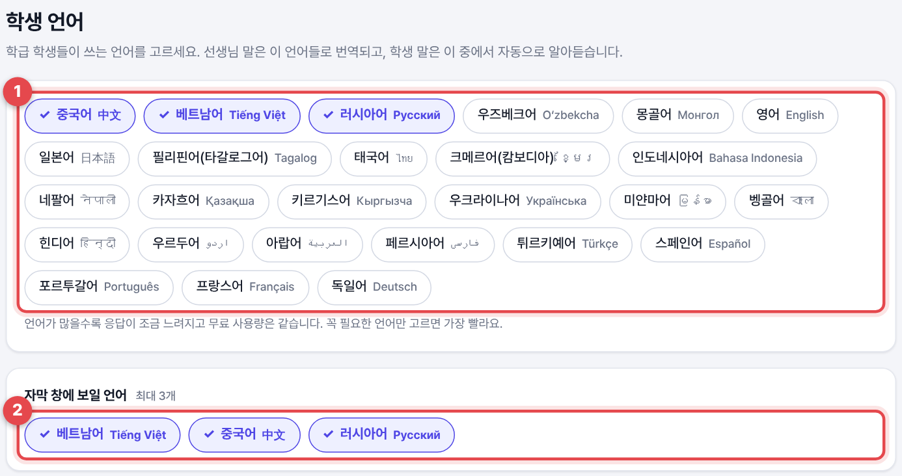
1학급 학생들이 쓰는 언어를 고릅니다. 다시 누르면 빠집니다 (최소 1개).
2자막 창에 보일 언어를 최대 3개까지 고릅니다. 고르지 않은 언어도 화면 기록과 학생 PC 링크에는 나옵니다.
7-2. 마이크
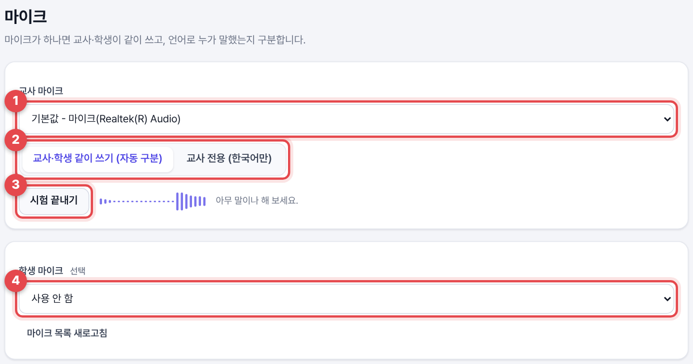
1교사 마이크를 고릅니다.
2마이크가 하나면 교사·학생 같이 쓰기, 선생님 전용 마이크면 교사 전용.
3마이크 시험하기를 누르고 말해 보면 막대가 움직입니다. 끝나면 시험 끝내기.
4(선택) 학생 쪽에 마이크를 하나 더 두면 학생 마이크로 고릅니다. 이 마이크 소리는 항상 학생 말로 처리됩니다.
마이크를 새로 꽂았으면 마이크 목록 새로고침을 누르세요. 교실이 시끄러우면 선생님 가까이 둘 수 있는 무선 마이크가 가장 정확합니다.
7-3. 교과 용어집
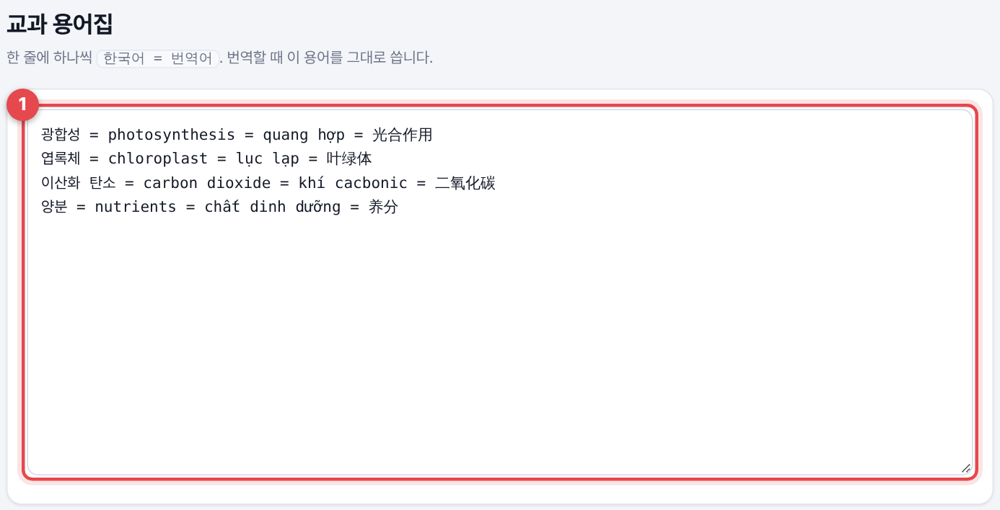
1한 줄에 하나씩 한국어 = 번역어 로 적으면, 번역할 때 그 용어를 그대로 씁니다. 여러 언어를 이어 적어도 됩니다. 광합성 = photosynthesis = quang hợp = 光合作用 용어집은 기본 방식에서 쓰입니다. Live 모드에서는 쓰이지 않습니다.
8Live 모드 (시험 중)
말을 쉼에서 끊어 보내는 대신, 말하는 동안 소리를 Gemini Live 로 흘려 보내 말하는 중에도 번역이 나오게 하는 방식입니다. 기본은 꺼져 있습니다.
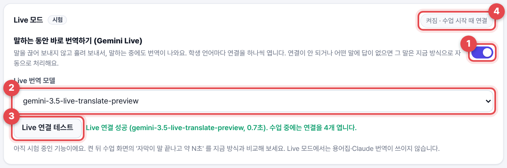
1말하는 동안 바로 번역하기를 켭니다. 수업 중에 켜고 꺼도 바로 바뀝니다.
2Live 번역 모델: 보통 그대로 둡니다. 목록은 API 키 → Gemini 연결 테스트를 누르면 이 키로 쓸 수 있는 것으로 채워집니다.
3Live 연결 테스트: 이 PC·이 키로 Live 를 쓸 수 있는지 확인합니다. 초록 글씨 Live 연결 성공이 나오면 됩니다.
4지금 상태가 표시됩니다 (아래 표).
상태 표시
뜻
꺼짐
Live 모드를 쓰지 않습니다 (기본 방식).
켜짐 · 수업 시작 때 연결
수업을 시작하면 연결합니다.
연결 중 (1/4)
학생 언어마다 연결을 여는 중입니다.
Live 로 자막 만드는 중 (4/4)
모든 연결이 열려 Live 로 자막을 만들고 있습니다.
지금 방식으로 바뀜
연결이 안 되거나 답이 없어 이번 수업은 기본 방식으로 자막을 만듭니다. 표시에 마우스를 올리면 이유가 보입니다.
알아 두세요
학생 언어마다 연결을 하나씩 엽니다 (교사·학생이 같은 마이크를 쓰면 한국어용 하나 더). 학생 언어가 많을수록 연결이 많아집니다.
안 되면 자동으로 기본 방식으로: 어떤 말에 4초 안에 답이 없거나 번역이 빠지면, 그 말은 기본 방식으로 다시 만들어 같은 자리에 씁니다. 여러 번 연달아 안 되면 그 수업은 기본 방식으로 이어 가고, 다음 수업에서 다시 Live 를 써 봅니다.
수업 화면 위쪽에 Live · 자막이 말 끝나고 약 N초가 보이면 Live 로 동작 중입니다. 이 숫자를 Live 를 끈 때와 비교해 보세요.
Live 모드에서는 용어집과 Claude 번역이 쓰이지 않습니다. 오늘 남은 무료 사용에는 Live 사용량이 들어가지 않습니다.
학교 네트워크가 막으면 "Live 서버에 연결하지 못했습니다 (HTTP …)"가 나옵니다. 이때는 Live 모드를 끄고 쓰세요.
9속도와 무료 사용량
왼쪽 메뉴 속도·무료 사용량에서 자막 속도와 오늘 사용량을 봅니다. 처음에는 바꾸지 않아도 됩니다.
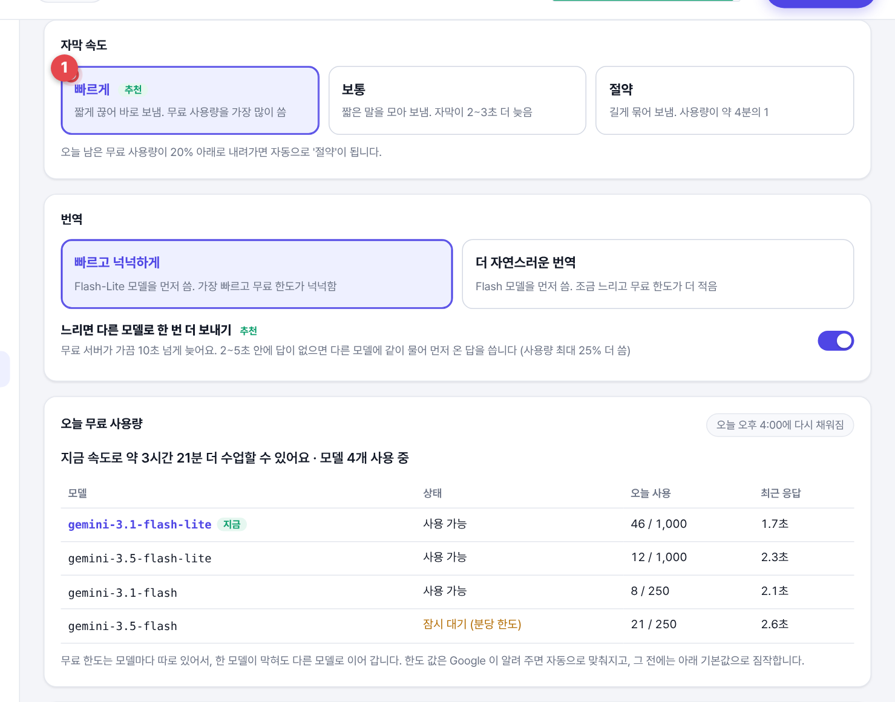
자막 속도
자막이 나오는 때
무료 사용량
1빠르게 (기본)
말이 끝나고 보통 2~5초
짧게 끊어 자주 보내므로 가장 많이 씀
보통
2~3초 더 늦음
짧은 말을 모아 보냄
절약
5~10초 더 늦음
길게 묶어 약 4분의 1만 씀
번역: 기본은 빠르고 넉넉하게. 번역이 어색하면 더 자연스러운 번역을 고릅니다 (조금 느리고 무료 한도가 적음).
느리면 다른 모델로 한 번 더 보내기: 무료 서버가 가끔 늦을 때 다른 모델에 같이 물어 먼저 온 답을 씁니다. 사용량이 아까우면 끕니다.
오늘 무료 사용량: 모델마다 오늘 쓴 양과 최근 응답 시간이 보입니다. 한 모델이 막혀도 다른 모델로 이어 가므로 걱정하지 않아도 됩니다.
오늘 남은 양이 20% 아래로 내려가면 자동으로 절약이 됩니다. 한도는 매일 오후 4~5시에 다시 채워집니다.
오전 수업이 많은 날은 전날 오후 4시 이후에 많이 쓰지 않는 것이 좋습니다. 하루 한도가 그 시각에 채워지기 때문입니다.
10API 키 화면
왼쪽 메뉴 API 키에서 키를 바꾸거나 연결을 다시 확인합니다.
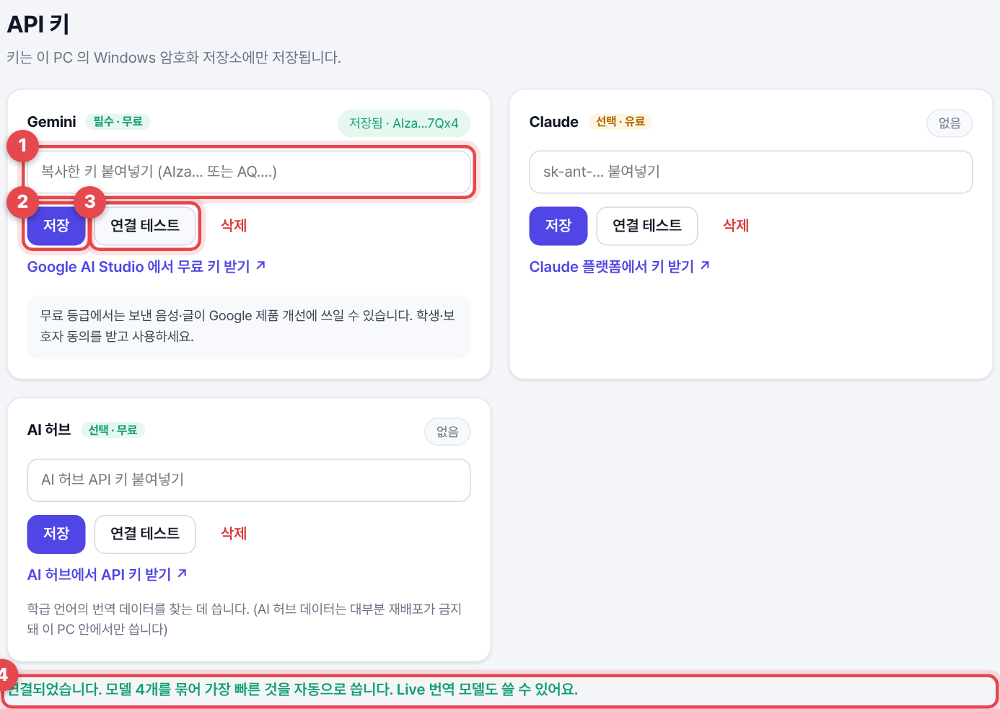
1새 키를 붙여넣습니다.
2저장: 키를 이 PC 의 Windows 암호화 저장소에 저장합니다. 화면에는 AIza…7Qx4 처럼 가려서만 보입니다.
3연결 테스트: 키가 되는지, 어떤 모델(Live 모델 포함)을 쓸 수 있는지 확인합니다.
4결과가 아래에 나옵니다. 초록 글씨면 정상입니다.
키
쓰임
Gemini (필수·무료)
받아쓰기·번역. 이 키 하나면 모든 기본 기능을 씁니다.
Claude (선택·유료)
번역만 Claude 로 하고 싶을 때. 속도·무료 사용량 → 번역 엔진에서 Claude 를 고릅니다. 결제가 필요합니다.
AI 허브 (선택·무료)
왼쪽 메뉴 AI 허브 데이터에서 학급 언어 번역 데이터셋을 찾아볼 때. 자막 기능과는 상관없습니다.
11학생 PC 링크 (선택)
같은 학교 네트워크의 학생 PC·태블릿에서 링크를 열면, 학생이 자기 언어 자막만 크게 볼 수 있습니다.
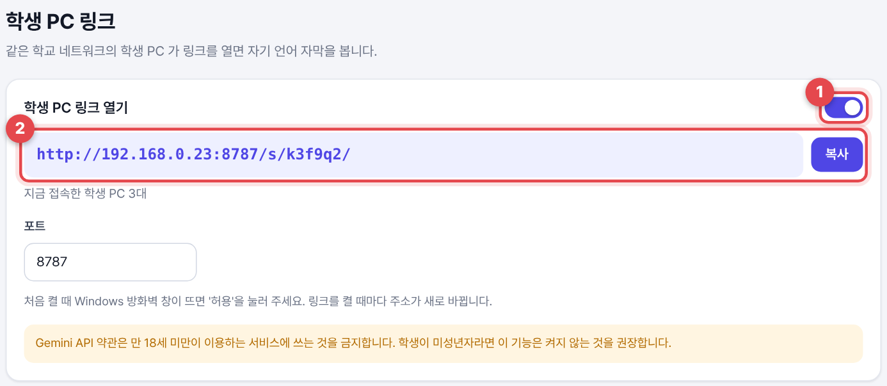
1학생 PC 링크 열기를 켭니다. 처음 켤 때 Windows 방화벽 창이 뜨면 허용을 누릅니다.
2나오는 주소를 복사해 학생 PC 의 Chrome·Edge 주소창에 붙여넣습니다. 학생은 화면의 🌐 에서 자기 언어를 고릅니다.
학생 PC 가 교사 PC 와 같은 학교 네트워크에 있어야 합니다. 학교 네트워크가 PC 끼리 통신을 막아 두었으면 열리지 않을 수 있습니다.
링크를 켤 때마다 주소가 바뀝니다. 지난 주소로는 들어올 수 없습니다.
Gemini API 약관은 만 18세 미만이 이용하는 서비스에 쓰는 것을 금지합니다. 학생이 미성년자라면 이 기능은 켜지 않는 것을 권장합니다. (교사 화면과 자막 창은 선생님이 쓰는 것이므로 해당하지 않습니다)
12개인정보와 동의
수업 중 말소리는 Google Gemini 로 전송됩니다. 무료 등급에서는 Google 이 보낸 내용을 제품 개선에 쓸 수 있고, 사람이 검토할 수 있습니다.
이 프로그램은 음성과 자막을 파일로 저장하지 않습니다. 화면의 자막 기록은 프로그램을 닫으면 사라집니다. (저장되는 것: 설정, 오늘 사용량, 암호화된 키)
개인적인 상담·생활 지도 이야기를 할 때는 멈춤(CtrlAltP)으로 듣기를 멈추세요.
무료 등급의 제품 개선 활용이 부담되면, 같은 키에 결제를 연결해 유료 등급으로 쓸 수 있습니다 (유료 등급은 제품 개선에 쓰지 않음).
가정통신문 안내 예시
우리 반은 외국어를 쓰는 학생의 수업 이해를 돕기 위해 실시간 통역 자막 프로그램을 사용합니다.
수업 중 말소리가 Google Gemini(무료 서비스)로 전송되어 글자로 바뀌고 번역되며,
Google 이 서비스 개선을 위해 이 내용을 활용할 수 있습니다. 프로그램은 음성이나 자막을 따로 저장하지 않습니다.
궁금한 점이나 원하지 않으시는 경우 담임교사에게 알려 주세요.
학교 사정에 맞게 고쳐 쓰세요. 학교의 개인정보 담당자와 먼저 상의하면 좋습니다.
13문제가 생겼을 때
이럴 때
이렇게 해 보세요
설치: "Windows의 PC 보호" 창이 뜸
추가 정보 → 실행 (2-2). 코드 서명 인증서가 없어서 뜨는 안내입니다.
설치: 학교 보안 프로그램이 설치를 막음
설치 없는 판(zip)을 써 보거나 정보 담당 선생님께 문의하세요.
마이크: "마이크를 열지 못했습니다"
Windows 설정 → 개인 정보 및 보안 → 마이크에서 마이크 액세스와 데스크톱 앱이 마이크에 액세스하도록 허용을 켭니다. 그다음 마이크 메뉴에서 다시 고릅니다.
마이크: 막대가 움직이지 않음
마이크 → 마이크 목록 새로고침 후 맞는 장치를 고릅니다. 마이크의 음소거 스위치도 확인하세요.
키: "키가 올바르지 않습니다"
AI Studio 에서 키를 다시 복사해 API 키 → Gemini에 저장 → 연결 테스트.
키: "이 키로 쓸 수 있는 Gemini 모델이 없습니다"
API 키 → 연결 테스트를 눌러 모델 목록을 다시 받습니다.
자막: 자막이 10초 넘게 늦음
무료 서버가 붐비는 때입니다. 잠시 뒤 나아집니다. 계속되면 Live 모드를 켜 보거나(8장) 번역을 빠르고 넉넉하게로 바꿉니다.
자막: "모든 모델이 분당 요청 한도에 걸려…"가 자주 뜸
속도·무료 사용량 → 자막 속도를 보통으로 바꿉니다.
자막: 무료 사용량이 너무 빨리 줄어듦
자막 속도를 보통·절약으로, 또는 느리면 다른 모델로 한 번 더 보내기를 끕니다. 학생 언어는 필요한 것만 고르세요.
자막 창: PPT·영상 위에 안 보임
CtrlAltH 를 두 번 눌러 다시 띄웁니다.
자막 창: 안 보이는 곳으로 감, 프로젝터를 뺐음
자막 창 → 처음 위치로.
자막 창: 도구 막대의 [이동]·모서리나 위치 버튼을 눌러도 안 움직임
v0.6.2 에서 고쳤습니다. 왼쪽 메뉴 아래 버전이 0.6.2 이상인지 확인하세요. 그래도 안 되면 자막 창 → 문제 보고용 정보 복사를 눌러 복사된 내용을 보내 주세요. 그동안은 CtrlAltM 으로 옮길 수 있습니다.
자막 창: 두 번째 모니터(프로젝터·TV)에서 엉뚱한 곳에 가거나 크기가 맞지 않음
노트북과 프로젝터의 Windows 배율이 다를 때 생기던 문제로 v0.6.1 에서 고쳤습니다. 자막 창 → 어느 화면에? 에서 그 화면을 한 번 다시 누르세요.
Live: "Live 모드가 안 돼서 … 지금까지 쓰던 방식으로"
알림 끝의 이유를 보세요. "쓸 수 없는 Live 모델" → API 키 → 연결 테스트 후 다른 모델 고르기 · "HTTP …" → 학교 네트워크가 막는 경우라 Live 모드 끄기 · "한도" → 그날은 Live 모드 끄기.
Live: 오히려 늦음
속도·무료 사용량 → Live 모드를 끄면 기본 방식으로 돌아갑니다.
학생 링크: 학생 PC 에서 안 열림
같은 네트워크인지, 방화벽을 허용했는지 확인하고 학생 PC 링크에서 포트를 바꿔 봅니다.
그 밖의 문제
프로그램을 닫았다 다시 엽니다. 그래도 안 되면 새 버전을 받아 설치합니다 (2-4). 화면 오른쪽 아래·알림 칸의 문구를 메모해 두면 원인을 찾기 쉽습니다.
14한눈에 보기
이 쪽을 인쇄해 교사용 책상에 붙여 두세요.
처음 한 번
설치판 내려받아 설치 (PC 보호 창 → 추가 정보 → 실행)
aistudio.google.com/apikey 에서 무료 키 만들기
처음 설정: 동의 → 키 붙여넣기 → 학생 언어 → 마이크
학생·보호자에게 안내 (12장)
수업마다
교실 통역 실행
큰 마이크 버튼 또는 CtrlAltP
PPT·영상 위에 자막이 뜨는지 확인
끝나면 다시 큰 버튼 (빨간색)
단축키
CtrlAltP 듣기 시작 / 멈춤 CtrlAltH 자막 숨기기 / 보이기 CtrlAltM 자막 창 옮기기 시작 / 끝
자막 위에 마우스 → 멈춤 · 이동 · A− A+ · 숨기기
기억할 것
무료 한도는 매일 오후 4~5시에 다시 채워짐
개인적인 이야기 → 멈춤
자막이 늦으면 → 위쪽 지연 숫자 확인, Live 모드 시험
자막 창이 사라지면 → CtrlAltH
새 버전·설명서 받기 github.com/7guwol7-max/translatorinclass 프로그램 왼쪽 메뉴 아래 사용설명서 (PDF)로도 이 설명서를 열 수 있습니다.